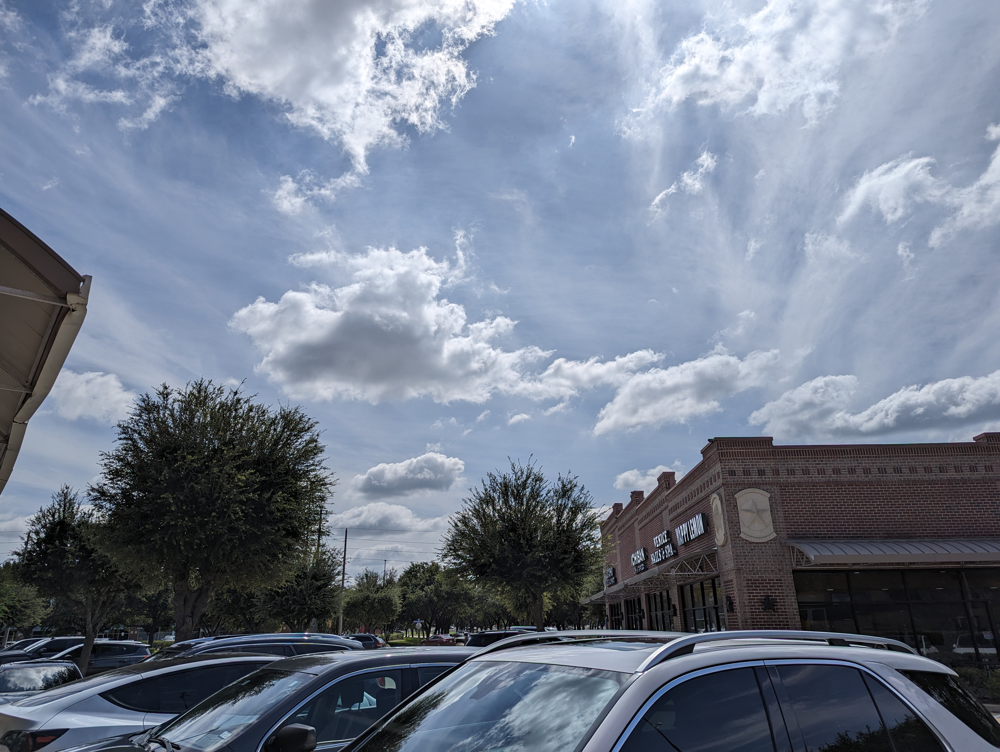
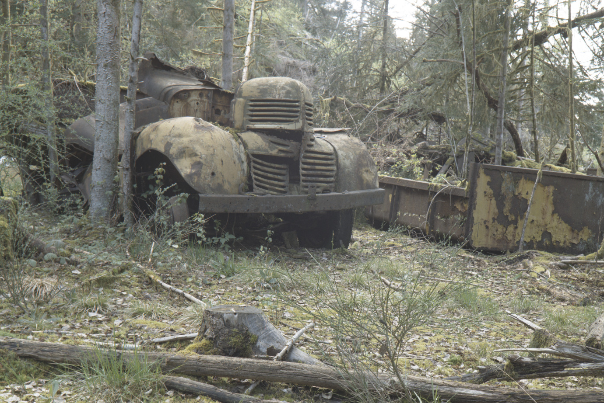
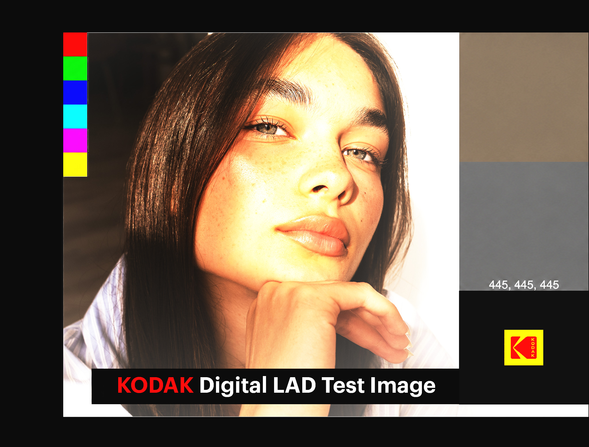
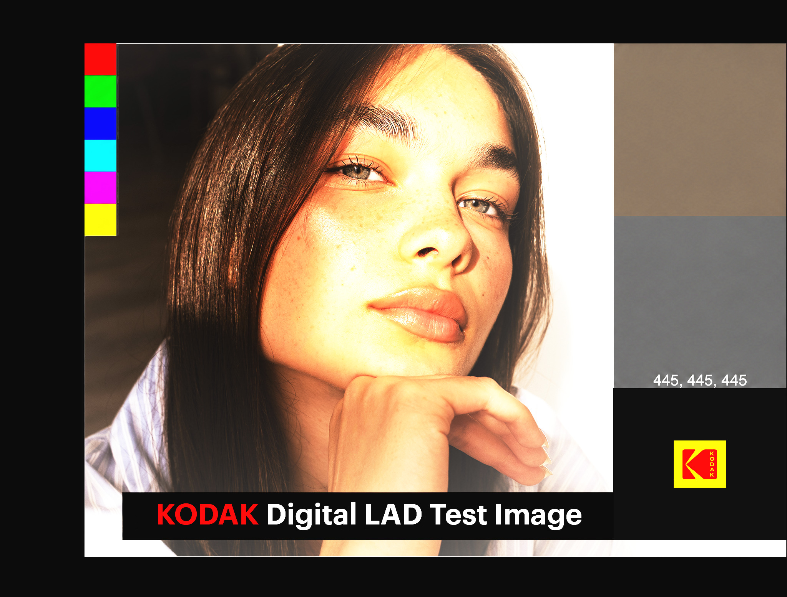
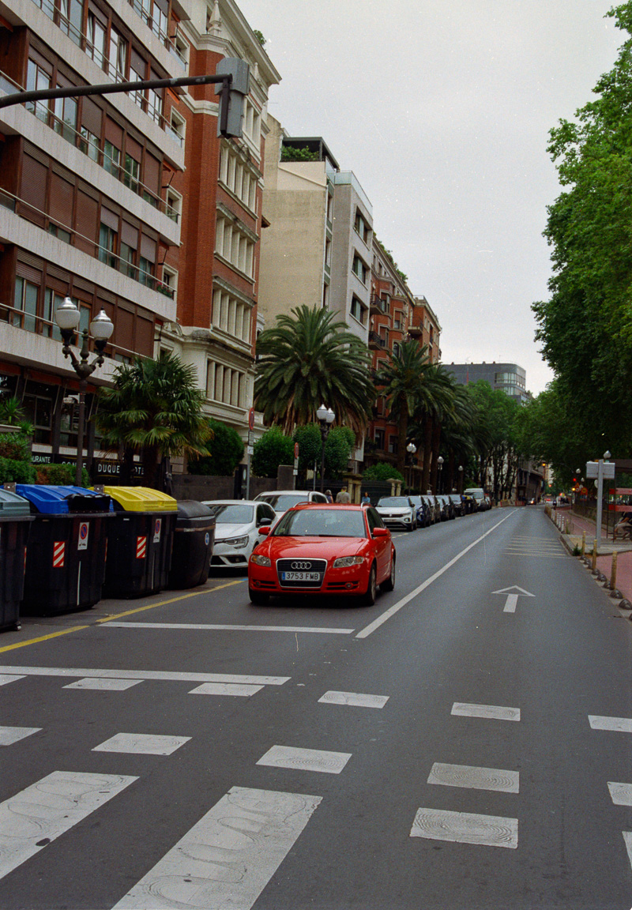
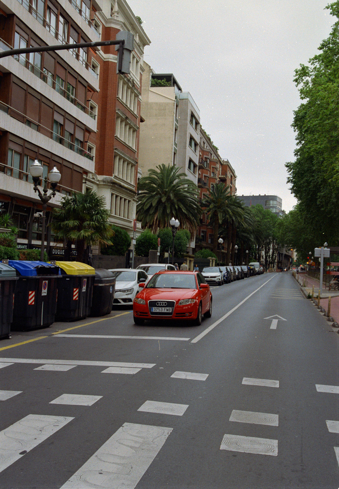
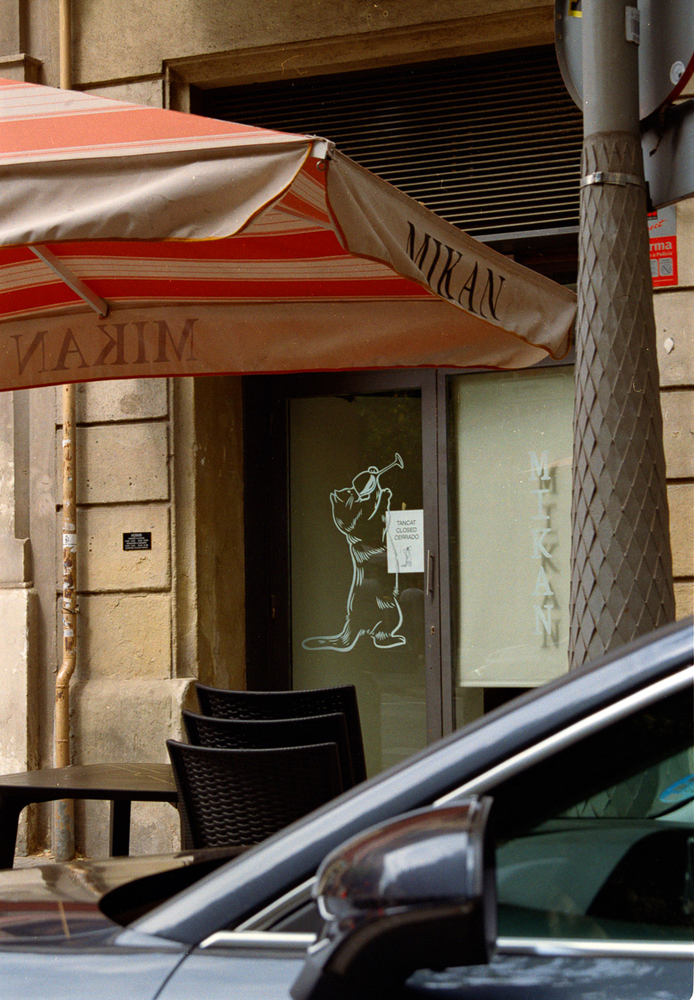

Both pictures in each pair come from the same scan of a film negative. The right-hand one is a single JPEG that carries the normal picture plus a small brightness map (Ultra HDR), so a screen with spare brightness can show highlights brighter than white.
How to view. Use Chrome on an HDR screen, such as a recent MacBook's built-in display or a recent phone, with the screen brightness below maximum. On an ordinary screen the two sides look the same.
Check your screen first. The phone photo just below is a known-good HDR picture. If its bright areas don't glow past the white of this text, your screen or browser isn't showing HDR, and nothing else on the page will either.
A phone photo (Pixel 6 Pro), not ours. It is a genuine Ultra HDR file.

A colour negative photographed with a Nikon. Watch the sky through the trees.
1.41% of the picture is brighter than white; its brightest 0.1% is 1.81 stops above white. Normal JPEG 627 KB, HDR JPEG 740 KB.

A colour negative photographed with a Canon. It is a front-lit scene under clear sky, so almost nothing in it is brighter than white. The two sides should look the same: HDR only changes pictures that have highlights to lift.
0.12% of the picture is brighter than white; its brightest 0.1% is 0.03 stops above white. Normal JPEG 1,340 KB, HDR JPEG 1,718 KB.
Kodak's Digital LAD test image, a cinema film scan. The white surround and lettering are deliberately far above white.
23.08% of the picture is brighter than white; its brightest 0.1% is 4.78 stops above white (shown up to 2.98). Normal JPEG 649 KB, HDR JPEG 1,188 KB.


A computed film exposure ramp, not a photograph. The normal version runs out of room at white; the HDR one keeps getting brighter.
32.09% of the picture is brighter than white; its brightest 0.1% is 4.49 stops above white (shown up to 2.97). Normal JPEG 89 KB, HDR JPEG 222 KB.
31.88% of the picture is brighter than white; its brightest 0.1% is 3.11 stops above white (shown up to 2.74). Normal JPEG 93 KB, HDR JPEG 237 KB.
Two negatives rendered by the open-source filmeon project, each with its normal version. They show what another HDR treatment of film looks like.



Every picture here is a public sample. None is a customer's film.